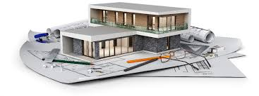

Arquitectura
Autor: Blas Dominguez

Definición
La arquitectura es una disciplina que abarca el diseño y la planificación de espacios físicos, estructuras y edificios. Se trata de una forma de arte y ciencia que se enfoca en crear ambientes habitables, funcionales y estéticamente agradables para las personas.